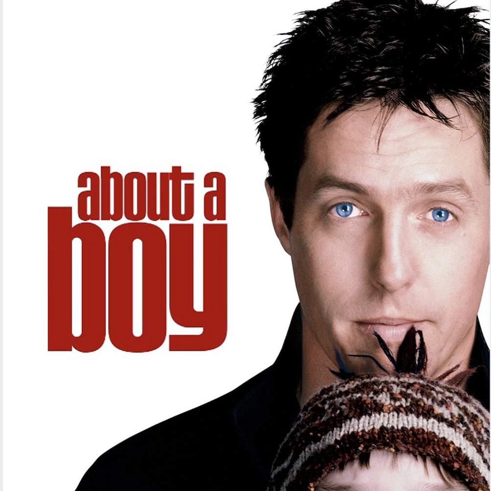
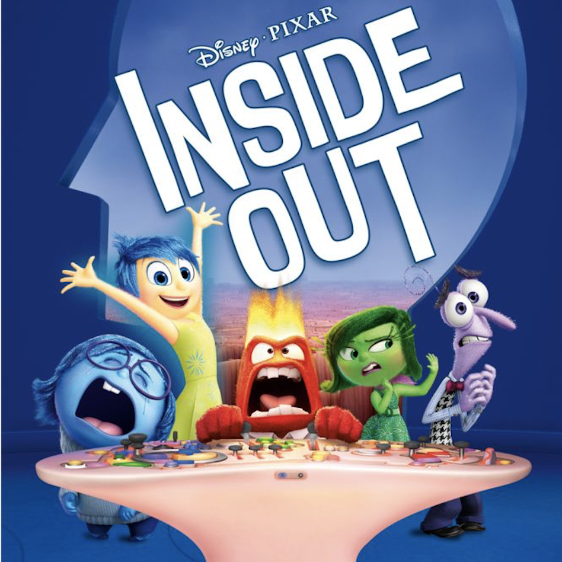
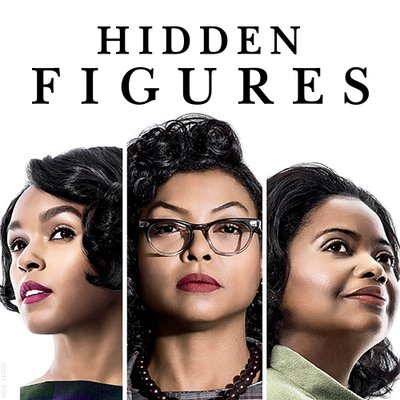

After 5 years as an investment professional, I decided to learn something new.
|  | About a BoyA comedy-drama starring Hugh Grant as Will, a rich, child-free and irresponsible Londoner in his thirties who, in search of available women, invents an imaginary son and starts attending single parent meetings. As a result of one of his liaisons, he meets Marcus, an odd 12-year-old boy with problems at school. Gradually, Will and Marcus become friends, and as Will teaches Marcus how to be a cool kid, Marcus helps Will to finally grow up. |
|  | Inside OutRiley (Kaitlyn Dias) is a happy, hockey-loving 11-year-old Midwestern girl, but her world turns upside-down when she and her parents move to San Francisco. Riley's emotions -- led by Joy (Amy Poehler) -- try to guide her through this difficult, life-changing event. However, the stress of the move brings Sadness (Phyllis Smith) to the forefront. When Joy and Sadness are inadvertently swept into the far reaches of Riley's mind, the only emotions left in Headquarters are Anger, Fear and Disgust. |
|  | Hidden FiguresThree brilliant African-American women at NASA -- Katherine Johnson (Taraji P. Henson), Dorothy Vaughan (Octavia Spencer) and Mary Jackson (Janelle Monáe) -- serve as the brains behind one of the greatest operations in history: the launch of astronaut John Glenn (Glen Powell) into orbit, a stunning achievement that restored the nation's confidence, turned around the Space Race and galvanized the world. |
This page was coded in my 4th week at Le Wagon